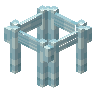

玻璃桥墩
Glass Bridge Pier
英文名: Glass Bridge Pier命名空间 ID:
mcwbridges:glass_bridge_pier类型: 方块所属模组: Macaw's Bridges资料检索: 🔎 在 MC百科 搜索「玻璃桥墩」合成获得 (1)
有序合成Macaw's Bridges


原始 JSON
{
"type": "minecraft:crafting_shaped",
"pattern": [
"WFW"
],
"key": {
"W": {
"item": "minecraft:glass"
},
"F": {
"item": "minecraft:glass_pane"
}
},
"result": {
"count": 3,
"id": "mcwbridges:glass_bridge_pier"
}
}